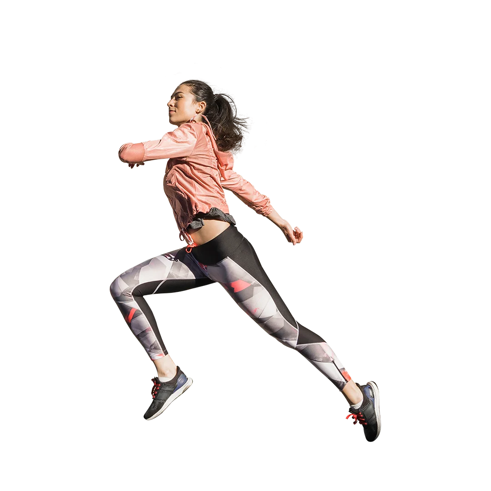
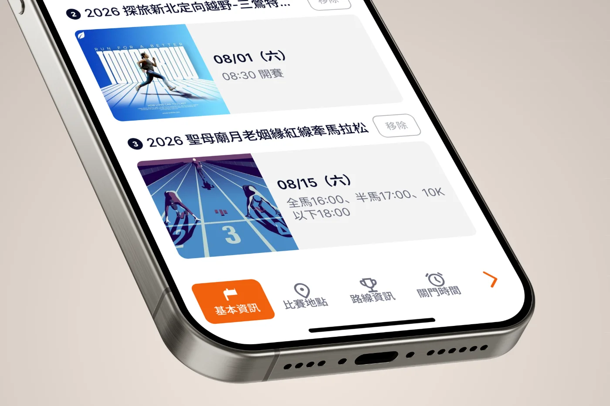
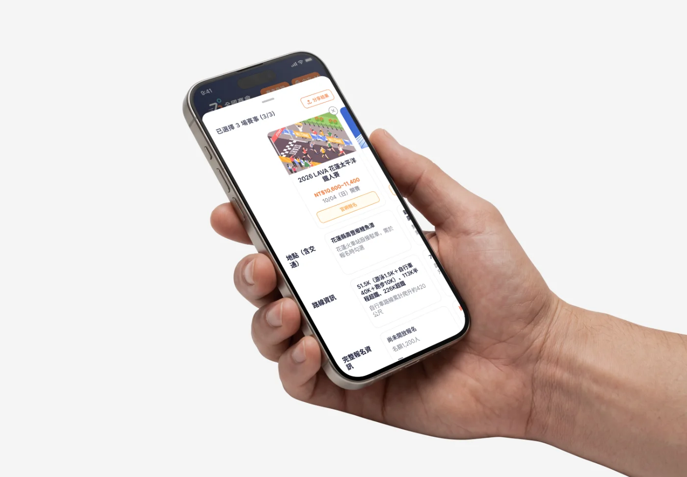
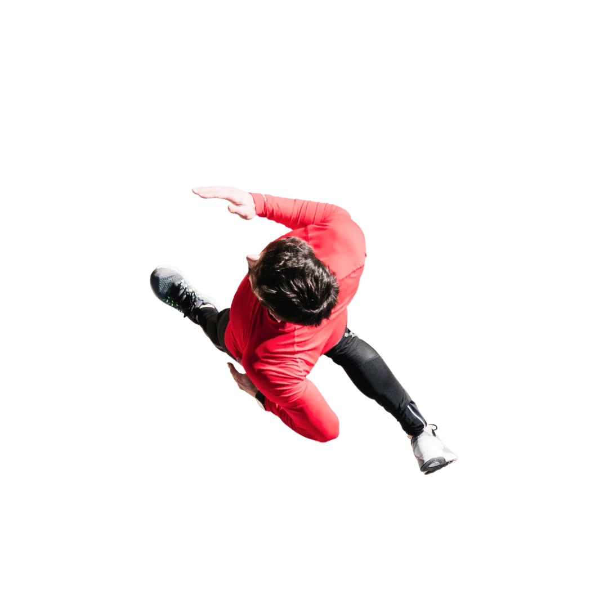

UI / UX 設計案例研究
全國賽會
網站優化計劃
把賽事列表重新定位成「搜尋與比較平台」，讓跑者三分鐘內找到適合自己的下一場比賽。
3 人團隊專案
UI / UX 設計
2026/06-07
專案概況與我負責的範圍
這份簡報將聚焦在我執行的設計區塊：賽事卡片、電腦版比較、手機版比較。
研究
定義要解決誰的問題
— 產品價值描述
— 使用者故事與 Persona
— 目標陳述
設計
處理多重狀態的三個模組
— 賽事卡片
— 電腦版比較：PiP + Overlay
— 手機版比較：Bottom Sheet
團隊分工：
競品分析、SWOT、兩個裝置的 Nav／篩選／排序／Footer 由另兩位成員負責，本簡報只談我做的部分。
跑者廣場 網站優化計劃｜UI / UX 設計
02 / 16
問題與洞察
現有網站沒有讓跑者快速縮小範圍的方法。
搜尋成本過高
只能按地區、年份、賽事種類這種概略條件篩，沒辦法再更細緻地縮小範圍。
賽事資訊難以比較
好不容易找到，卻要跳去各自的網頁，只能自己記著重點來回比對。
資訊呈現方式難以閱讀
賽事以長條列表呈現，要一行一行往下掃，讀起來比較費力。
跑者廣場 網站優化計劃｜UI / UX 設計
03 / 16
使用者研究
我把設計對象收斂成兩位代表性跑者，新手與資深各一位。
新手跑者
Annie ・ 26歲 ・ 上班族
跑過公司的 5K，想挑戰第一場正式賽事，但不知道哪些比賽適合第一次參加。
使用者需求
篩出適合新手的比賽，清楚比較日期、距離與報名資訊。
進階跑者
Kevin ・ 34歲 ・ 工程師
每年固定跑 3–5 場，依訓練週期挑賽事，反覆切換賽事頁面比較資訊很費力。
跑者廣場 網站優化計劃｜UI / UX 設計
04 / 16
設計目標
核心目標是讓跑者快速找到適合自己的比賽，這四項就是為此定的。
01
提升賽事搜尋效率
更細緻的篩選條件，讓跑者快速縮小範圍。
02
降低資訊理解成本
重整資訊的層級，一眼就看得到重點。
03
支援多賽事比較
選定後能把關鍵欄位並排比對。
04
改善跨裝置使用體驗
同一套比較邏輯，電腦和手機都順手。
跑者廣場 網站優化計劃｜UI / UX 設計
05 / 16
我負責的三個設計
從卡片開始，一路看到電腦與手機的比較。
跑者廣場 網站優化計劃｜UI / UX 設計
06 / 16
賽事卡片
一張卡片要同時處理報名狀態、互動回饋和篩選連動。
影片：四種報名狀態
assets/card-status.mp4 ・ 1080 × 1350
四種資訊狀態
開放報名中／即將截止／尚未開放／報名截止
影片：hover 與 selected
assets/card-interaction.mp4 ・ 1080 × 1350
三種互動狀態
default／hover／selected
影片：與篩選列連動
assets/card-filter.mp4 ・ 1080 × 1350
與篩選列連動
篩選列展開時卡片縮窄，收合後恢復，版面不重排
跑者廣場 網站優化計劃｜UI / UX 設計
07 / 16
從打勾到數字
收到使用者回饋後，我把選中狀態從打勾改成編號，一眼就看得出選到第幾場。
跑者廣場 網站優化計劃｜UI / UX 設計
08 / 16
比較功能的兩個設計原則
透過設計原則，讓比較成為挑賽事時自然的一部分。
不擋住主要畫面
選了幾場一目了然，且不影響主要流程。
跨裝置一致體驗
同一套比較邏輯，換了裝置也不用重新適應。
跑者廣場 網站優化計劃｜UI / UX 設計
09 / 16
電腦版比較：PiP(子母畫面)
比較清單要能一直在，又不打斷瀏覽，子母畫面的設計剛好能兩者兼顧。
跑者廣場 網站優化計劃｜UI / UX 設計
10 / 16
電腦版比較：Overlay(比較彈窗)
從各家賽事都有的欄位出發，決定要比什麼、怎麼排、最多比幾場。
比較欄位怎麼選？
盤點各家賽事的資訊，只保留幾乎每場都提供的欄位。
欄位順序怎麼排？
把跑者最先看的費用、狀態、日期放在最上面。
上限為什麼是 3 場？
參考 Apple 的比較上限，讓電腦和手機都比最多 3 場。
跑者廣場 網站優化計劃｜UI / UX 設計
11 / 16
手機版比較：Bottom Sheet(底部面板)
經過三次迭代，讓比較不用跳頁、在同一個面板完成。
V1 ・ 照搬表格
三欄橫向並排，螢幕太窄，視線左右來回。
V2 ・ 改成縱向
符合手機閱讀習慣，但比較結果多一層跳轉。
V3 ・ 不跳頁完成比較
Tab Bar 切換基本資訊／地點／路線／關門時間。
跑者廣場 網站優化計劃｜UI / UX 設計
12 / 16
重新看待使用者情境
第三版沿用了 Apple 的分類切換，卻忽略跑者對賽事不熟，切走就會忘記剛看過什麼。

點 Tab 切換整頁內容
第三版：參考 Apple 購買頁
忘記時要切回原分類重新查看；Tab 寬度也迫使欄位名稱與電腦版不同。

滑動看完已選賽事的比較
第四版：參考 Sony 產品比較頁
比較的資訊都在同一頁，欄位左右並排，與電腦版的使用邏輯相同，用詞也一致。
跑者廣場 網站優化計劃｜UI / UX 設計
13 / 16
分享結果：比較的終點動作
收到回饋後才意識到結果無法分享很可惜，於是規畫了分享功能。
為什麼是單張長圖 PNG？
通訊軟體與社群限動可直接預覽、不需下載、生成也快。
為什麼不是 PDF？
承載力較高，但在手機上變成要另外點開的檔案，多一道摩擦。
怎麼分享出去？
點分享時，網頁把比較結果生成一張長圖，再交給手機系統的分享功能傳出去。
跑者廣場 網站優化計劃｜UI / UX 設計
14 / 16
反思與學習
做完這個專案，我更清楚好設計要對得上使用者的情境，也要經得起追問。
參考對象的情境要跟自己的對得上
Apple 的分類切換適用於熟悉的同系列產品，不適用陌生的路跑賽事。
設計決策要說得出依據
PiP 參考 Gmail、比較欄位取交集、上限參考 Apple，每個決定都有來由。
驗證限制：
本次調整依據課堂專家評估與同儕回饋，非真實使用者測試，亦無量化數據。
跑者廣場 網站優化計劃｜UI / UX 設計
15 / 16

Thanks
for your attention!
卡片、PiP、Overlay、Bottom Sheet 的完整狀態與四個版本的迭代紀錄都可以現場翻。